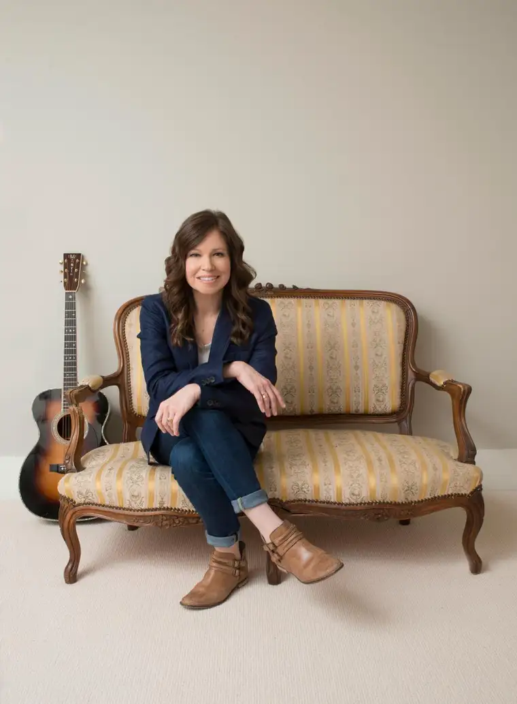

NASHVILLE — Author, speaker and musician Kelly Minter wants to propose a radical idea to women when she’s in Fargo next month: suffering doesn’t have to be meaningless.
“So many women I know are going through hardship, and often we can’t make sense of it,” she said through email. “Would a loving God really allow pain in our lives?”
Minter said part of the answer can be found in the life of Joseph, son of Jacob from the Old Testament. “What we learn from Joseph’s life is that God was doing a deeper work in and through the pain and unjust circumstances of his life,” she explained. “While Joseph’s brothers meant to harm him, God meant it for good.”
She said she’s excited to “unfold this message at Cultivate in North Dakota, because we’re going to learn how to suffer well, prosper well and love well. And we’re going to see how Joseph’s life points us to Jesus.”
Minter not only speaks to her audiences, but through her and her team’s gifts, uses music to reach their souls.
Bethany Bordeaux, Minter’s assistant and violinist, said the musical element makes the Cultivate events particularly powerful. “We’ve got a band of four,” she said. “Kelly teaches, but also jumps in and does music with us as well.”
Bordeaux admitted music can be “a tricky thing in the church,” because there are so many styles and preferences. “We both grew up on hymns and we love them, so we wanted to include that in our event, but there’s also a lot of merit to songs being written now, so we thought, ‘Let’s do both. There’s no reason we have to pigeonhole our musical experience.’ ”
While designing Cultivate, Bordeaux said, Minter felt the gatherings shouldn’t be “just getting up and giving a cheerleading session.” “It’s important to encourage one another, but at the end of the day, Scripture is the inspired Word of God, and we wanted to make sure (Minter) could encourage women through the vehicle of teaching Scripture.”
They also wanted prayer to be very intentionally placed within, she said, noting they consistently hear from women who name the prayer portion as their favorite part of the weekend; some say it was life-changing.
Cultivate connects its message with its global nonprofit missions’ partner, Justice and Mercy International, she added, which “works a lot with orphans and vulnerable children” in more obscure corners of the world, like the Amazon jungle in Brazil and the Ukraine.
It also invites local organizers to highlight a local nonprofit. The Fargo event will shed light on Voice for the Captives, a group that educates on human and sex trafficking in our area.
Lisa Hanson, part of the local Women’s Ministries Network hosting the event, and founder of Voice for the Captives, said there’s currently a spike in trafficking here due to the Big Iron Farm Show, which attracts this kind of activity.
“The awareness of this is critical,” Hanson said. “I want the community to know I’m here fighting this and I can’t do this without their help.”
Kathy Spriggs, co-director, said she’s excited “to bring a speaker who has a heart for God’s women.”
“We’ve done several of her Bible studies in the jail (for women), and they love her. Her worship style is phenomenal, along with her music, writing and singing,” she said.
Judy Siegle, co-director, added that Minter is “a solid, passionate, down-to-earth gal who speaks messages that are relevant to your life.”
Bordeaux said the Cultivate team is “ready to love all the women we come into contact with; from the one who just got a new job and everything is cracking for her, to the one with five kids whose husband just left her and everyone in between … Everyone who comes through the doors has a story.”
[For the sake of having a repository for my newspaper columns and articles, I reprint them here, with permission, a week after their run date. The preceding ran in The Forum newspaper on Sept. 23, 2017.]